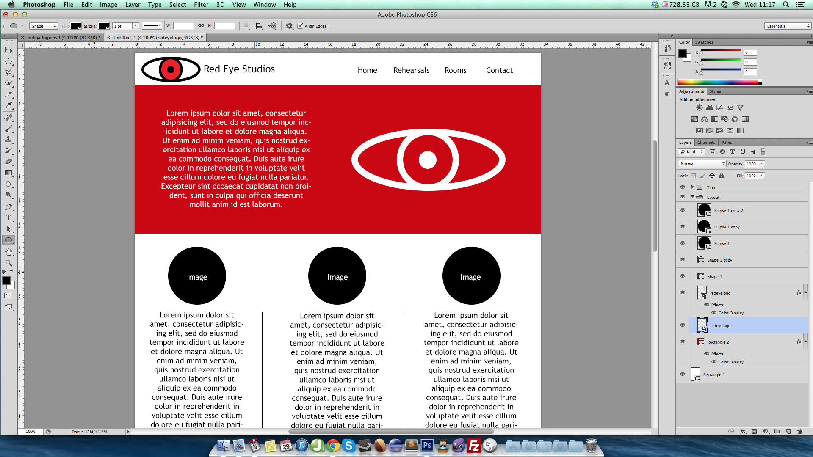

If you haven’t heard of such things as Wordpress, Drupal or Joomla then you either:
If I’m perfectly honest with you, I don’t have an answer for you. From where I stand I like to hand code websites and feel rewarded when I see the final product come to life and hear the client saying that they’re happy with it. There’s something just really enjoyable about coding and it’s always nice to think “Yeah, I built that."
There’s two really big things that fall into the arguement for CMS, and that is the ease of updating and the cost.
Cost wise, it’s A LOT cheaper to just do it yourself, customise a template and boom you’re done. Sure you’ll need to pay for a domain name but that’s pennies in comparison to the cost of hiring someone to design the site and logo and then code and maintain it.
The updating management of it is also super simple for the user, most CMS’s come with a WYSIWYG (What you see is what you get) editors which means that people literally just need to pop in, change some text then click save. It’s truly that simple.
The main thing that I have found from having people contacting me is that they all want a CMS, when in reality they really don’t need one. I’d say 90% of small businesses really don’t need to update their site every other day and would only really need to update say pricing or images every now and then.
This is just my two cents on the idea of CMS, ideally I’ll be trying to guide clients away from them but if push comes to shove, i’ll more than likely nudge them in the direction of Concrete5.
I’ve decided to try and make some layouts for websites in my free time, my first thought was to do a redesign for my local studio where me and my band practice. So far it’s looking not too bad though it’s far from finished.
I’m also looking to do one for the promotion company that has started in my area that put us on their second gig. Yet to be started.

If you’ve been anywhere near the world of web design or development in the past year then you’ll know that having a dedicated mobile site is becoming a dying practice. It did work well for a bit, but with the release of responsive design there’s really no need to go about building two, or even three, versions of the one site anymore. How does responsive web design work? Responsive web design uses what is called a grid system. This is the idea that depending on the size of the screen that it is being displayed on it will reduce the amount of columns in the grid until it reaches the desired width. So a full desktop view would be 16 columns where as a mobile would be 4. In order for this to happen there has to be media queries that can detect the size of the screen that the site is being displayed on.
For example, if you look at the Skeleton framework it uses nothing but 3 CSS files and 1 preset index.html. If we venture into the skeleton.css file we will see that there is presets for each screen size.
Due to each device that is used these days screen resolutions can differ greatly. The sizes that are used in this are as follows:
If you look at my previous post you’ll see that I have a video on the effects of using this particular framework and you can see the screens adjustment as it went from a large full sized desktop view, down to a much smaller mobile view. The components are still presented the exact same way as they were in the desktop view, just scaled and put into a scrollable order rather than having to scroll left and right just to view the full web page.
With responsive web design the entire process of creating a mobile friendly site has becoming much less time consuming to the developer and to the designer.
My own personal experience of responsive web design stems from using both Skeleton and Bootstrap 3. Both of which have their pros and cons. Skeleton is a very programmer-friendly framework with its straight forward CSS and plain english approach. Bootstrap 3 however takes a bit more time to sit and work through. I am currently using Skeleton to build my own site and it’s an absolute breeze, I love using Skeleton. With that being said, the end results of bootstrap in my opinion look much much better.
If you have never worked with responsive web design before I’d highly recommend going over to Skeleton, download the files and then follow this tutorial. It will give you your first taste and will show you how it really works. From here, move on to bootstrap when you have an understanding of what you’re working with.
Happy coding!